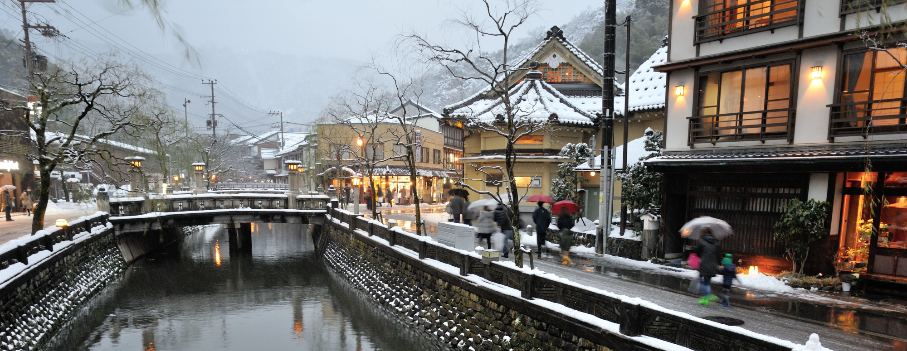

志賀直哉をはじめとした多くの文人に愛された城崎温泉。
1300年もの長い歴史がある古い町並みが残っており、
趣の異なった「七つの外湯」やグルメを楽しめる温泉街です。
温泉が多いことから湯巡りをする観光客が多く訪れています。
「7つの外湯」の内、最も古くからある温泉で、コウノトリが足の傷を癒やしたという伝説が残っている事から名付けられました。温泉からは山の景色や庭園を眺めることができます。
営業時間
定休日
料金

約717年頃に道智上人どうちじょうにんというお偉い方が祈ったところ、温泉が湧き上がったという逸話が残っています。裏山を見渡せる露天風呂が人気です。
営業時間
定休日
料金